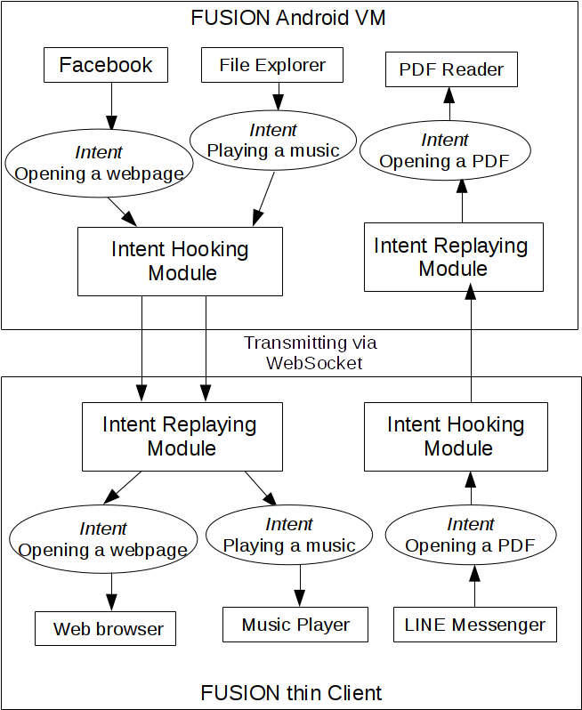

Abstract
FUSION is a unified application model for virtual mobile infrastructure based on the SVMP project called FUSION. FUSION bridges the gap between the remote VMI server and the client-side mobile device via supporting remote bi-directional IPC(inter-process communication) and loosely synchronized file system.
FUSION classifies IPC events into two types: IPC events without accessing local resources and IPC events accessing local resource. For IPC events without accessing local resources, FUSION simply hooks the IPC events, forwards them to the remote peer and replays them in the remote environment. For complex IPC events involving with accessing files located in the local device, FUSION will analyze each individual IPC event and transmit the corresponding files to the remote peer with respect to each IPC event. Once the remote application completes its job and the user tries to disconnect with the remote peer, FUSION will synchronize those files back to the local side. The synchronization makes the file changes updated by the remote application visible to the local side.
Base on our experimental results, FUSION incurs less than 1% overhead on the system. For simple IPC events without local resource access, FUSION can transmit those IPC events to the remote peer under various network conditions in less than 1200ms. For complex IPC events involving local resource access, FUSION can also serialize and transmit the files efficiently.

Demo
License
FUSION is released under the Apache License, Version 2.0.